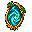
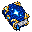
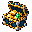
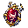
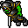
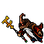

A CUSTOM TIBIA WORLD · TIBIA 15.25 · CANARY & OTCLIENT
Familiar roots. Unfamiliar wonders.
A world of forest-gold relics, dangerous discoveries and deceptively beautiful monsters. This is Vestara, taking shape one system, sprite and story at a time.
THE MOONSILVER COLLECTIONBeauty is not a promise of mercy.
Inside this showcase Systems documented / reported working Artwork & prototypes Design direction
Based on project files and our development discussions. This is a curated tour, not a fresh gameplay audit.
01 / A WORLD WITH SOMETHING TO HIDE
The king. The chasm. The borrowed light.
Story direction
Camelot still stands. Its king has paid for that survival with his sword arm.
Beyond Albion, a mountain lies cleft and broken. Moonsilver creatures emerge from the aftermath: pale beasts, golden markings, and angels whose light feels strangely wrong.
In the streets, doomsayers condemn Arthur’s pride. On his throne, Arthur shoulders the blame. Merlin remembers a different night.
“I was with the king that night, and any man would have hoped to show the bravery he did.”Merlin · proposed dialogue
02 / THE LIGHT HAS TEETH
The Moonsilver bestiary
Custom art collection
White, silver and gold unite the creatures visually. The goal is endgame danger: preparation, teamwork and sustained pressure, even when you dodge the big mechanics.
PALETTE • SILVER / IVORY / GOLD
Moonsilver Demon
The familiar demon silhouette, transformed into white flesh and gilded detail. Something recognisably monstrous now wears the colours of a holy guardian.
Existing project artwork. Combat values and spawn readiness are not certified here.
ENCOUNTERS / A DIFFERENT PRESENCE
Some monsters stand apart.
In-game previews
Elite and Mythic monsters have a visible identity of their own. Distinctive outlines and overhead labels make these encounters stand out in the world.
ELITE
A flash of gold.
A golden outline gives a familiar dragon a striking new presence.
MYTHIC
A warning in red.
A vivid red outline marks the Mythic variant before you get close.
03 / A NEW LANGUAGE OF MAGIC
Silver radiance. Corrupted holiness.
Animated effect artwork
Moonsilver holy area
Silver-white light with gold accents: the visual foundation for the new creatures.
Moonsilver energy
A matching magical palette across an existing energy-area animation.
Corrupted holy area
Charcoal and red reveal the violence beneath a once-sacred shape.
Corrupted holy impact
A focused counterpart for darker single-target spell ideas.
✧
SIGNATURE SPELL CONCEPT
Moonfall
Stars fall around the Judicator using descending missile trails, then erupt into silver holy impacts. A cascade of borrowed starlight, paired with ordinary targeted attacks so the encounter keeps its pressure.
Design direction
04 / MORE THAN A NEW COAT OF PAINT
Systems that change the way you play
Vestara runs on Tibia version 15.25 and includes the newest Tibia class, Monk. Shape your character through attributes, masteries and distinctive equipment as balancing continues.
MAKE THE BUILD YOURS
Every point has a purpose.
Strength, Dexterity, Vitality, Intelligence, Luck, Arcane and Nature: seven attributes to shape your character, with your allocation visible in the client.
Select image to enlarge ↗
KNOW YOUR TREASURE
The details behind the drop.
Inspect your equipment’s stats, rolled bonuses, set information and imbuement slots in a distinctive Vestara tooltip.
Select image to enlarge ↗
SPOT SOMETHING SPECIAL
Treasure that stands out.
Coloured item highlights bring the loot system into your backpack, making distinctive finds easy to spot at a glance.
Select image to enlarge ↗
01Documented
Attributes with memory
Seven attributes shape your character. Each new level from level 2 grants five points. Death does not erase them, and recovering lost levels does not award them twice.
Level up→5 points→Your build
02Documented
Masteries that do something
Vocation choices hook into combat: attack speed, ricochet, cleave, reflection, leech and echo effects. Confirmed choices persist, with client feedback and stat reporting.
Spell Echo and sequential ricochet were reported working in playtests. Deeper mastery choices remain a future design goal.
03Documented
Loot worth looking at
Rarity and affixes turn familiar equipment into individual finds. Skill rolls, resistances, echo and ricochet sources create more routes into a build, including off-hand equipment.
Item rolls are stored on the item itself, with combat integration and inspect information.
04Reported working
Trade the actual treasure
The instance market preserves the specific item being sold, including its affixes. Players can inspect and trade rolled equipment rather than receive a generic replacement.
The trading flow was confirmed functional in our discussion; presentation and edge-case validation remain ongoing work.
05Documented
Keep the item you love
Item locking protects against accidental vendor sales, destructive forge roles and configured ground drops, while allowing enhancement of a retained item.
A small lock indicator communicates the item’s protected state.
06Design catalogue
Equipment with a shared identity
83 set proposals explore gear that belongs together visually or thematically, with level-aware bonuses and detailed proc concepts.
A set framework is noted in the repository. The catalogue is proposal data, not proof that all 83 sets are enabled.
05 / THE VESTARA LOOK
Forest roots. Golden details.
UI & item artwork
Dungeon browser prototype · monster previews, possible loot, level and party requirements. Queue behaviour in this prototype is simulated.

Animated asset
Pocket Portal
A leafy gold charm with a moving teal interior. Intended to return the player to temple when out of battle.



Item artwork
A boost for the whole world
XP, loot and elite-spawn consumables, designed for a global 25% bonus lasting two hours. Artwork and intended behaviour, not activation code.
Item artwork
A reward worth coveting
The white-and-gold Moonsilver bag carries the same visual language into treasure and reward presentation.
06 / ON THE HORIZON
From your first raid to the false heavens
Planned progression
✧
A WORLD THAT KEEPS GROWING
More paths. More stories. More to discover.
Vestara will include lots of custom quests and zones, with plenty of future additions planned. New adventures and places to explore will keep expanding the world beyond its first release.
I

LEVEL 50 · EARLY GAME
The enormous orc
A playful first raid and the first encounter to build before beta. Daily reward lockout proposed.
II

LEVEL 400–600 · MIDGAME
Ferumbras / Balrog
The next step in team encounters, intended to follow as players grow stronger. Weekly reward lockout proposed.
III
LEVEL 800+ · ENDGAME
The Moonsilver angel
Albion’s questline leads into a dangerous raid, with victory intended to unlock permanent access to the Moonsilver lands.
Boss-specific telegraphs, brief casting pauses for aimed attacks, and unavoidable pressure are part of the encounter direction. These are goals, not claims that the queue and all three raids are live.
THE THREAD THAT TIES IT TOGETHER
Recognisable Tibia. A world that is our own.
Build variety. Distinctive loot. A mystery beneath the light. And an endgame that asks you to bring friends.